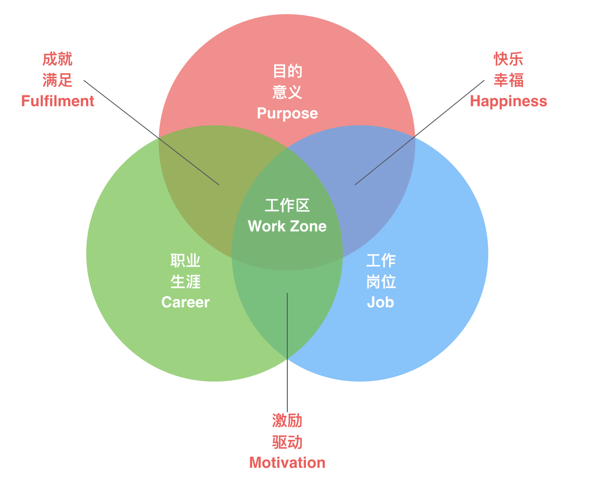

- 00 开篇词 程序行知：走在同样的路上，遇见自己的风景.md.html
- 01 初心：为什么成为一名程序员？.md.html
- 02 初惑：技术方向的选择.md.html
- 03 初程：带上一份技能地图.md.html
- 04 初感：别了校园，入了江湖.md.html
- 05 架构与实现：它们的连接与分界？.md.html
- 06 模式与框架：它们的关系与误区？.md.html
- 07 多维与视图：系统设计的思考维度与展现视图.md.html
- 08 代码与分类：工业级编程的代码分类与特征.md.html
- 09 粗放与精益：编程的两种思路与方式.md.html
- 10 炫技与克制：代码的两种味道与态度.md.html
- 11 三阶段进化：调试，编写与运行代码.md.html
- 12 Bug的空间属性：环境依赖与过敏反应.md.html
- 13 Bug的时间属性：周期特点与非规律性.md.html
- 14 Bug的反复出现：重蹈覆辙与吸取教训.md.html
- 15 根源：计划的愿景——仰望星空.md.html
- 16 方式：计划的方法——脚踏实地.md.html
- 17 检视：计划的可行——时间与承诺.md.html
- 18 评估：计划的收获——成本与收益.md.html
- 19 障碍：从计划到坚持，再到坚持不下去的时候.md.html
- 20 执行：从坚持到持续，再到形成自己的节奏.md.html
- 21 信息：过载与有效.md.html
- 22 领域：知识与体系.md.html
- 23 转化：能力与输出.md.html
- 24 并行：工作与学习.md.html
- 25 时间：塑造基石习惯（上）——感知与测量.md.html
- 26 时间：塑造基石习惯（下）——切割与构建.md.html
- 27 试试：一种“坏”习惯.md.html
- 28 提问：从技术到人生的习惯.md.html
- 29 偏好：个人习惯的局限与反思.md.html
- 30 写作：写字如编码.md.html
- 31 画图：一图胜千言.md.html
- 32 演讲：表达的技术.md.html
- 33 定义：阶梯与级别.md.html
- 34 晋升：评定与博弈.md.html
- 35 关系：学徒与导师.md.html
- 36 核心：安全与效率——工程技术的两个核心维度.md.html
- 37 过程：规模与协作——规模化的过程方法.md.html
- 38 思维：科学与系统——两类问题的两种思维解法.md.html
- 39 职业倦怠：如何面对？.md.html
- 40 局部最优：如何逃离？.md.html
- 41 沟通之痛：如何改变？.md.html
- 42 技术停滞：如何更新？.md.html
- 43 无法实现：困扰与反思.md.html
- 44 完成作品：理想与现实.md.html
- 45 代码评审：寄望与哀伤.md.html
- 46 人到中年：失业与恐惧.md.html
- 47 该不该去创业公司？.md.html
- 48 该不该接外包？.md.html
- 49 技术干货那么多，如何选？.md.html
- 50 技术分歧，如何决策？.md.html
- 51 技术债务，有意或无意的选择？.md.html
- 52 选择从众，还是唯一？.md.html
- 53 选择工作，还是生活？.md.html
- 54 侠客行：一技压身，天下行走.md.html
- 55 江湖路：刀剑相接，战场升级.md.html
- 56 御剑流：一击必杀，万剑归心.md.html
- 57 三维度：专业、展现与连接.md.html
- 58 三人行：前辈、平辈与后辈.md.html
- 59 三角色：程序员、技术主管与架构师.md.html
- 60 三视角：定位、自省与多维.md.html
- 61 工作之余，专业之外.md.html
- 62 跨越断层，突破边界.md.html
- 63 成长蓝图，进化跃迁.md.html
- 尾声 始于知，终于行.md.html
- 捐赠
39 职业倦怠：如何面对？
从今天起，咱们专栏即进入第 4 个大主题——“徘徊：道中彷徨”。成长的途中，我们总会面临很多的困扰与惶惑，这些困扰和彷徨很多都关乎选择，只有了解并认清这类困惑，我们才可能做出最合适的选择。
职业生涯的路上，每个人都会碰到职业倦怠期，我也不例外。曾经好几次，我都陷入其中。如今从中摆脱出来后，我就想尝试搞清楚这样一种状态的根源，思考一种方法来缩短它持续的时间，或者说增加它出现的时间间隔。
那职业倦怠到底是怎样的一种感受呢？
倦怠感
1974年，美国临床心理学家弗罗伊登贝格尔（Herbert J. Freudenberger）首次提出“职业倦怠”的概念，用来指人面对过度工作时产生的身体和情绪的极度疲劳。
职业倦怠感想必你也不陌生，一般将可以明显感知到的分为两种。
一种是短期的倦怠感。它出现的状态，可以用两个英文单词来形象地表达：Burnout（燃尽，精疲力尽）和 Overwhelm（难以承受）。
作为程序员的我们想必最能感知这样的状态，因为我们处在现代信息工业时代的最前沿，快节奏、高压力、大变化的环境很是常见。应对这样的环境，我们就需要更多的 “燃料” 和更强的承受力。但有时，环境压力突然增加，短期内超出了我们的负载能力，难免出现“燃尽”（Burnout）的时刻，并感到难以承受（Overwhelming）。
此时，就进入了短时的倦怠期。这种短期的倦怠感觉其实和感冒差不多常见，年年都能碰上一两次，应对的办法其实也很简单：休个年假，脱离当前的环境，换换节奏，重新补充 “燃料”，恢复精力。就像感冒，其实并不需要什么治疗，自然就能恢复。人，无论生理还是心理，都是一个 “反脆弱” 体，“凡不能打垮我的，必使我更强大”。
另一种更可怕的倦怠感是长期的，它与你对当前工作的感受有关。
有些人把 “上班” 看作工作的全部，那么这样的人去上班一般都是被动的、勉强的。这样的人就是普遍存在的 “混日子” 的上班族，虽不情愿，但又没有别的办法，毕竟不能失去这份工作的收入。而这种 “混日子” 的状态，其实就是处在一种长期的职业倦怠期。
其实真正的工作，应该是一种积极的、有目标的事情，它能让我们实现对自我和他人的价值，并且乐在其中。但即使一开始我们是在做这类真正的 “工作”，时间久了后，也难免碰到职业倦怠感，这时我们可能就会困惑：难道我已不再热爱现在的工作了？对于这种状态，有一个说法是这样的：
倦怠，意味着你在这一关打到头了，而新的一关的钥匙，就在你手上。
遇到这种情况的本质，其实是我们自己的 “工作区” 发生了转移和变化，从而脱离了原来的 “工作态”，碰到了倦怠感。
当倦怠感出现时，“工作态” 就隐退了；而为了消除倦怠感，我们就需要找回 “工作态”。
工作态
工作态，如其名，是一种工作的状态，一种让我们在工作中感觉到美好的状态（beautiful state）；是做我们喜欢的工作时表现出来的一种状态。
每周我们有五个工作日，但不代表我们每个工作日的工作时间都能处在 “工作态”。甚至很多时候我们都无法处在 “工作态”，但却又必须在某个时间点前完成工作。这样的日子久了，就难免会滋生倦怠。
据说有一半的人，每天下班回家上床睡觉前，都会想想诗和远方，早上起床都有一种不想再去上班的冲动；当感到这种冲动时，差不多就进入了工作倦怠期，并对当前的工作产生了倦怠感。
去年有部电影叫《魅影缝匠》，主角是一名裁缝。他每天起床后，从早餐时刻开始就进入了他的 “工作态”，排除和避免一切干扰，专注于他的服装设计工作。其实，这个电影本身的故事并不算吸引我，只是电影中这位缝匠的 “工作态” 深深地打动了我。也许，这就是一种同为创作性工作带来的共情吧。
现代心理学上有个概念叫 Flow，一般译作 “心流”，也是一种工作状态，它是人在专注进行某些行为时所表现出的心理状态，比如艺术家创作时的状态。在此状态下的人们，通常不愿被打扰，也比较抗拒中断，个人的精神力将完全投注在某种活动上，同时还会伴随高度的兴奋与充实感。
那么 “工作态” 和心流有何不同？“工作态”，其实是我自己发明的一个概念，它的定义覆盖的期限更长久，就像长跑中的节奏；而心流的定义更像是一种 “工作态” 的局部过程表现，像一次短程冲刺。你没法长时间地处于心流状态，但在相当长的一段时间周期内，你可以处在 “工作态” 中，就像电影中那位缝匠，几十年如一日的，每天早晨都会自动进入那样一种 “工作态”。
职业倦怠期，显然是与 “工作态” 互斥的一种状态。所以，要脱离职业倦怠期，最有效的方式就是进入 “工作态” ；而进入 “工作态” ，最核心的地方在于找到自己的 “工作区”。
工作区
关于工作区，我想借用下面一张图来展示。

工作的“三区域”图
“工作区” 的概念不是我发明的，其原始概念图来自国外一个站点，我将其翻译和重绘了一下。其中定义了关于工作的三个区域，也就是说每一份工作都包含了这三个方面：
- 目的意义 Purpose
- 职业生涯 Career
- 工作岗位 Job
目的意义，这是工作的终极之问。它决定了你的很多选择，以及你接受什么、拒绝什么，是工作愿景背后的灵魂所在。每个人工作都会有自己的目的与意义，而且还会随着工作过程发生变化（或者说进化更合适些）。追寻目的与意义，这可能是你、我一生的工作。
职业生涯，是个人一生职业愿望的追寻过程。它由长期目标驱动，是追寻 “目的意义” 的一条你所期望的路径。而这条路径并不唯一，它因人而异，因你的 “目的意义” 而异。它构建在你工作过程中的所有经历、经验、决策、知识、技能与时运的基础之上。
工作岗位，这不过是你现在上班的地方，包括了位置、角色、关系、职责与薪酬的总和。
这三个区域会有交集，这里我举个实际的例子。假如你工作的 “目的意义” 非常现实，就是希望有更多的收入改善家庭生活，住更大的房子，开更好的车。而现在的 “工作岗位” 能够提供这样让你满意的收入水平，那么你就会感到 “快乐幸福”。
而若你对 “职业生涯” 路径的期望是从程序员到架构师，甚至再到 CTO，当前的 “工作岗位” 能提供这样的发展路径，那你就会充满 “激励驱动”。显然，职业生涯一路达到 CTO，收入水平会更高，与你的现实 “目的意义” 相符合，那你就会感到 “成就满足”。
如图中所示，这三者相交的那个位置，就是你的 “工作区”。在这个区域内，工作让你有驱动力，感到快乐，充满成就感。找到了 “工作区”，很自然就会进入 “工作态”。
当职业倦怠时，自然是远离了工作区，这时很容易产生的一个决策是：换一份工作。我曾经就做过这样的决策。换一份工作没有对错好坏之分，它能改变你的工作岗位，甚至也能改变你的职业生涯路径，但它唯一不能改变的就是你对 “目的意义” 的思考与认识。
做自己所爱，是对的；爱上自己所做，也是对的，关键就是要找到什么在真正驱动你前进。
丹麦哲学家索伦·克尔凯郭尔（Søren Kierkegaard）说过一句话：
Life can only be understood backwards; but it must be lived forwards.
只有向后回首时才能理解生活，但生活却必须向前。
当你回首职业生涯的来路时，终于理解了职业倦怠，但前路之上，还会碰到它，而你已经知道该如何面对它了，对吧？
© 2019 - 2023 Liangliang Lee. Powered by gin and hexo-theme-book.